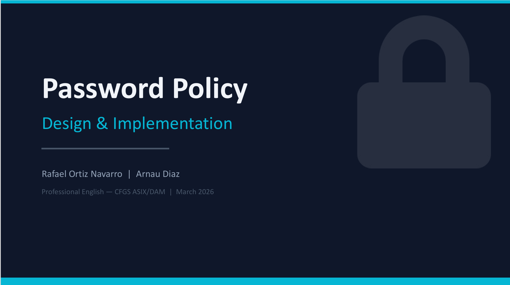
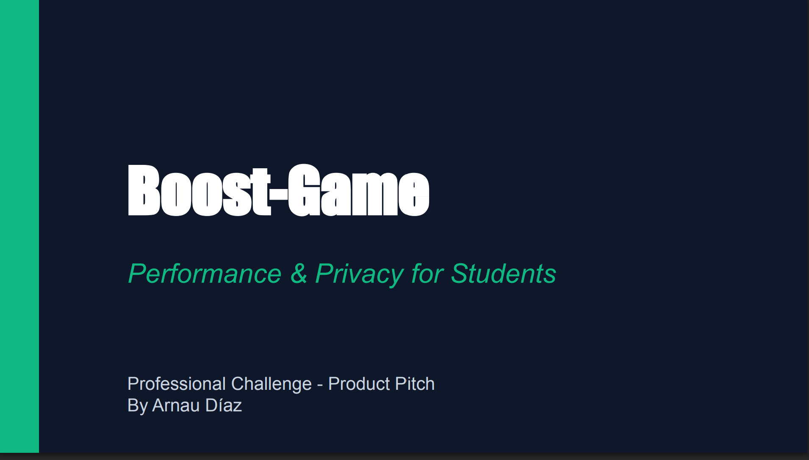

Tinkering with Systems and Networks
This is where I drop my own tutorials (like my setups in Linux or AWS), interesting cybersecurity news, and some notes on what I’m learning in the ASIX course.
Read moreI've always liked messing around with computers to see how things work under the hood. What started as me just testing stuff at home is now what I'm actually studying. I'm mainly into managing infrastructure and securing systems. Basically, I like to see how things break so I can figure out how to patch them.
When I fix an issue, I don't just want to make it work and move on. I prefer to check the logs or the config to see what actually caused the crash so it doesn't happen again.
What I'm working on lately:
• Systems Administration: Deploying servers and applying basic hardening.
• Networking: Setting up networks from scratch (dealing with subnets and routing, not just plugging cables in).
• CLI: I spend most of my time in the command line (Bash and PowerShell). Honestly, I try to avoid the GUI whenever I
can.
To be honest, I got into IT because I wanted to make video games. But as soon as I started studying, I realised the command line and cybersecurity hooked me way more than coding. I’m not saying I’ll never make a game, but my focus has completely shifted.
Even before starting my course, I was always poking around to see how computers worked and trying to learn stuff on my own.
I’m 18 and currently in my first year of ASIX (Network Computer Systems Administration). I’m not going to lie and say I have years of experience—I'm just starting out. But I pick things up fast and I just want to get my hands dirty with real projects.
First year of Higher National Diploma (CFGS) in Network Computer Systems Administration (ASIX).
Currently preparing for basic Linux and Networking certifications.
I focus on building secure home labs and testing configurations in Linux and Windows Server.
We test a lot of tech in class, and I try to practice as much as I can in my free time:
| Area | Technologies I use |
|---|---|
| Systems | Daily driver is Linux (Ubuntu/Debian) mostly via CLI. I also do basic Windows Server management. |
| Networking | Configuring protocols, IP addressing, and running Packet Tracer simulations. |
| Virtualisation | Setting up test environments using VirtualBox and VMware. |
| Hardware | Building PCs from scratch, basic maintenance, and troubleshooting hardware faults. |
The best thing about sysadmin is that it’s impossible to get bored. There’s always a log to check, a service crashing, or a network config to secure.
For me, it’s not enough if something just "works". I need to figure out why it works or, more importantly, why it failed.
My main goal right now is to finish my course knowing how to deploy solid, secure infrastructure. I prefer the technical issues that make everyone else give up.
If you want to see exactly what I’m studying or the projects I've done in class, check out my CV here:
Full technical report on PostgreSQL password policies and security standards.

A slide deck summarizing the project. It shows the research we did and the final security standards we applied.
Walk-through of the implementation process and configuration steps.

Our final pitch for a product we designed. It covers the market research, the tech stack, and why the idea is solid.
A quick guide with practical tips on how to keep a decent balance between work and your personal life without burning out.
A short video presentation explaining the main points from the Work-Life Balance guide.
A report analysing how people actually buy, looking at current trends and what makes them choose one product over another.
A video presentation breaking down how we did the Consumer Behaviour Analysis and the main things we found out.
A technical presentation breaking down how we designed the password policy and the core security measures we’ve implemented.
A technical presentation breaking down our security research, the new password standards, and the full implementation strategy.
A video presentation breaking down how we designed the password policy and the core steps we've taken for its implementation.
A professional pitch presentation breaking down our market research, technical features, and the unique value proposition of our product.
"Arnau is the kind of guy who just won't let a network lab beat him. If a ping drops, he keeps digging until he finds the exact config error. Honestly, it's great having him in the group."
"He’s got a lot of curiosity for a first-year. Just getting a server to run isn't enough for him; he always wants to know what's happening under the hood when it crashes. That’s exactly the mindset you need to be a good sysadmin."
"My laptop wouldn't boot, so I gave it to him. He didn't just fix it; he actually explained what broke so I wouldn't mess it up again. You can tell he knows his stuff and genuinely likes helping out."
This is where I drop my own tutorials (like my setups in Linux or AWS), interesting cybersecurity news, and some notes on what I’m learning in the ASIX course.
Read more
I’ve split the blog into categories (Systems, Networks, Security) and tags so you can actually find stuff easily. I mainly use it to store my notes and command cheat sheets.
Read more
I usually post what I’m working on over on LinkedIn just to connect with other IT students and sysadmins. The idea is just to share fixes for those typical lab errors we all run into and help each other out.
Read moreBuilding fast, modern websites that actually work well on mobile.
I handle the whole process: the design, the code, the database, and getting it live on a server. Basically, you get a site that looks good, has basic SEO, and is easy for your clients to use.
Price: From €200 (depends on what you need).
If your PC is dragging or you need to buy a new one and don't know where to start, I can help.
I can check your hardware and software, clean up the system, or recommend the right parts to buy. You save money on useless repairs, get your PC running fast again, and get honest advice without the confusing tech jargon.
Price: €20 / hour.
Setting up and maintaining local networks and servers for homes or small offices.
This covers installing Linux or Windows servers, sorting out your router and Wi-Fi config, setting up backups, and providing remote support. You get a stable network, basic security, and your data stays safe.
Price: Custom quote depending on the setup.

This is my workspace. Nothing fancy, just what I need to study, spin up a few VMs, and spend hours messing around in the terminal.

Outside of class, I'm doing some Google for Developers courses to get the hang of Cloud infrastructure. It’s just a good way to see how real production environments actually work, rather than sticking strictly to the theory we do in the course.

Mid-troubleshooting. Honestly, there's no better feeling than finally spotting that one broken config line after staring at logs for hours.
I finished my Intermediate Degree (CFGM), which basically gave me the technical foundation I'm using now in the Higher Degree. I went from just liking computers to actually knowing how to build them, configure them, and set up a proper local network.
I did my SMX work placement doing IT maintenance and tech support. It was my first real job in the sector, and I quickly learned that in a real company, you can't just "turn it off and on again". You have to be fast, keep things organised, and know how to talk to the client when everything is crashing.
I’ve built a small test environment at home using some old hardware and a bunch of VMs. I’ve managed to get services running that I had no clue about before, like file servers and basic Linux environments. It’s basically my sandbox to break things so I can figure out how to fix them.
In our Networks and Systems classes, I always try to push a bit beyond just passing the assignment. If we have to set up a basic network, I usually try to see how I can secure it or write a quick script to automate the config.
I finished my Intermediate Degree (SMX), which covered the basics of hardware and tech support. Now I’m 18 and in my first year of ASIX, focusing on Windows/Linux servers and networking. Most of my hands-on experience comes from my SMX work placement and the labs I build at home.
I mainly work with Linux (Ubuntu/Debian) and Windows Server. For networking labs, I use Cisco Packet Tracer, and I run my test environments on VirtualBox or VMware. I also write basic Bash scripts to automate repetitive stuff.
I'm pretty stubborn. If a service crashes or a config fails, I just keep at it. I’ll dig through the logs and check the documentation until I find the actual root cause. Getting it working again is great, but I really just want to know why it broke in the first place so I learn from it.
The easiest way is to just drop me a message on LinkedIn or send me an email (links below). I’m always open to roles or projects where I can put what I know into practice and learn from senior sysadmins or cybersecurity guys.
Got a project in mind, a server that won't boot, or just want to connect? Hit the button below and I'll get back to you.
Open Contact Form